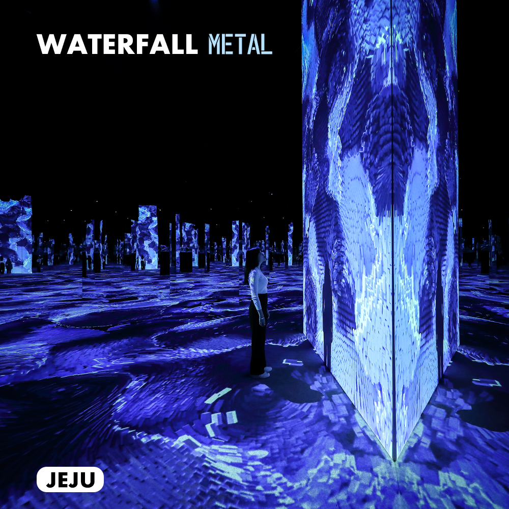
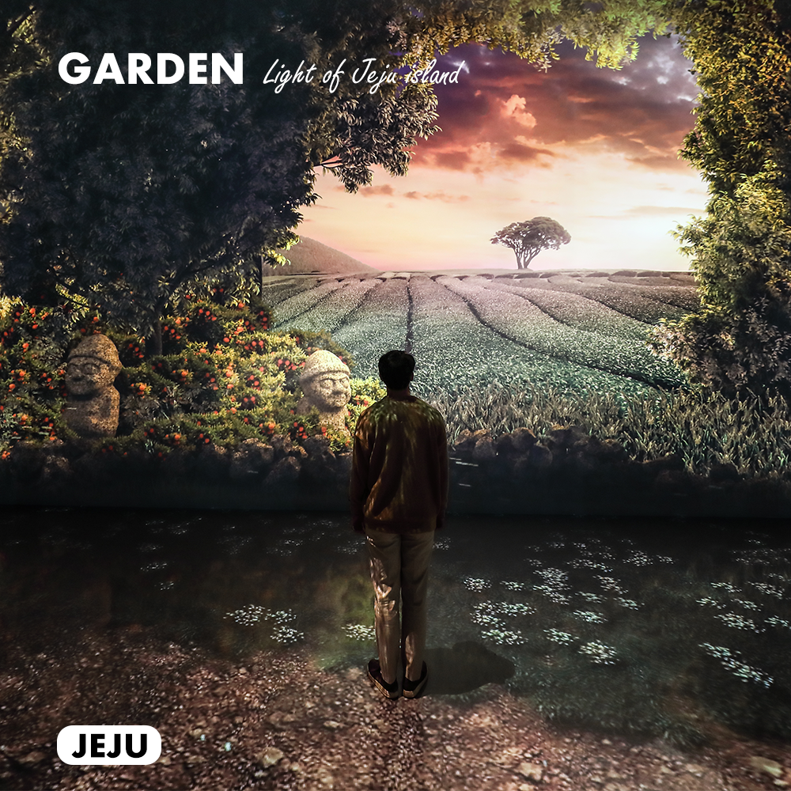
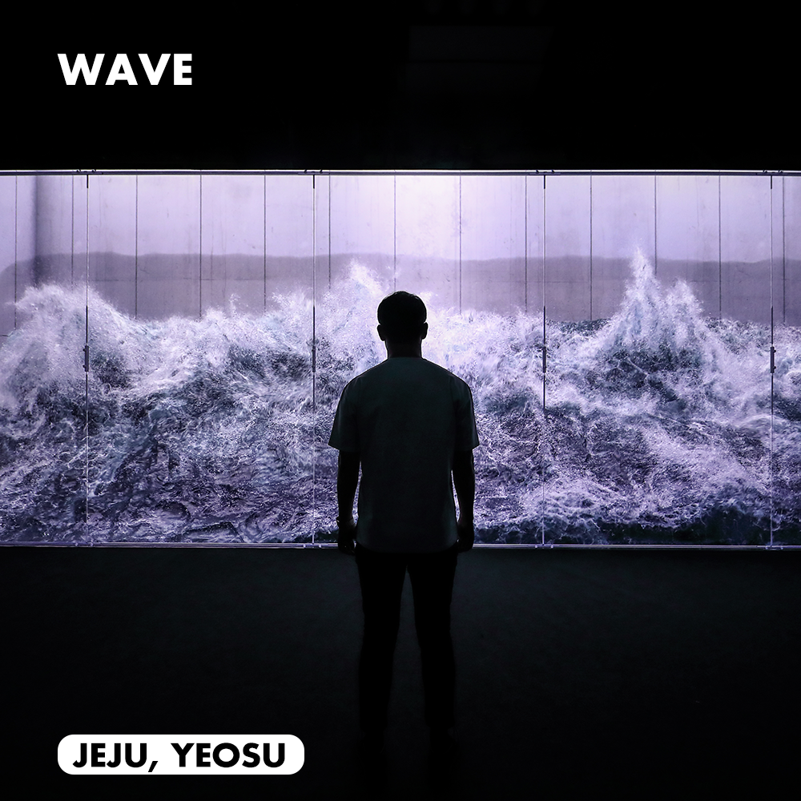
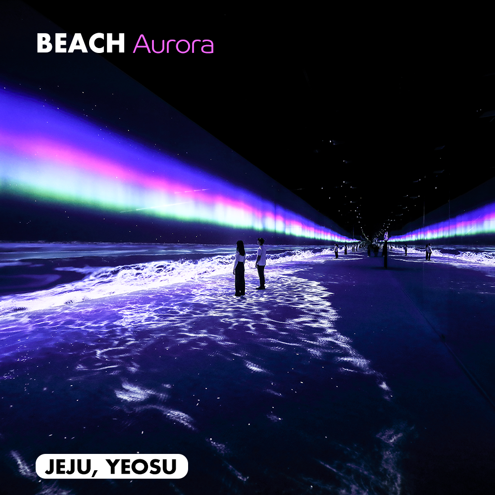
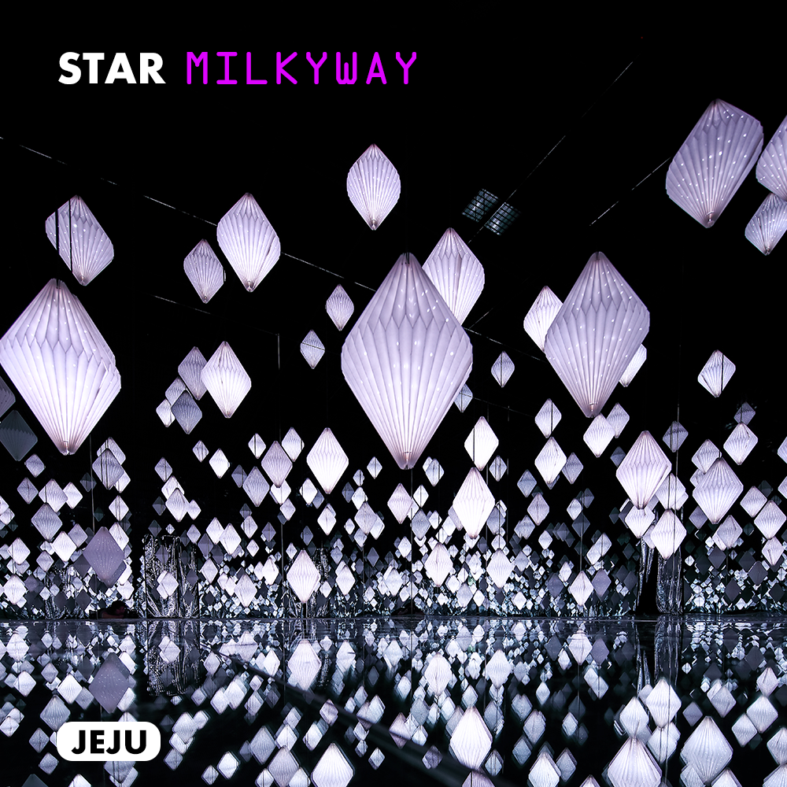
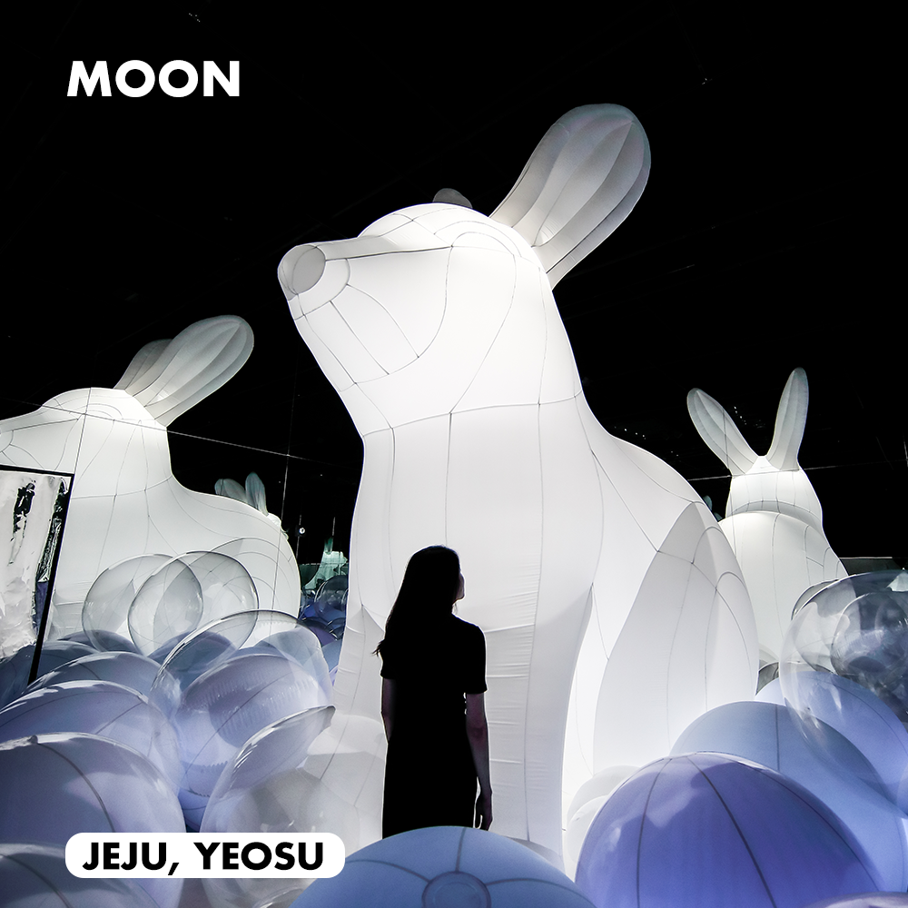
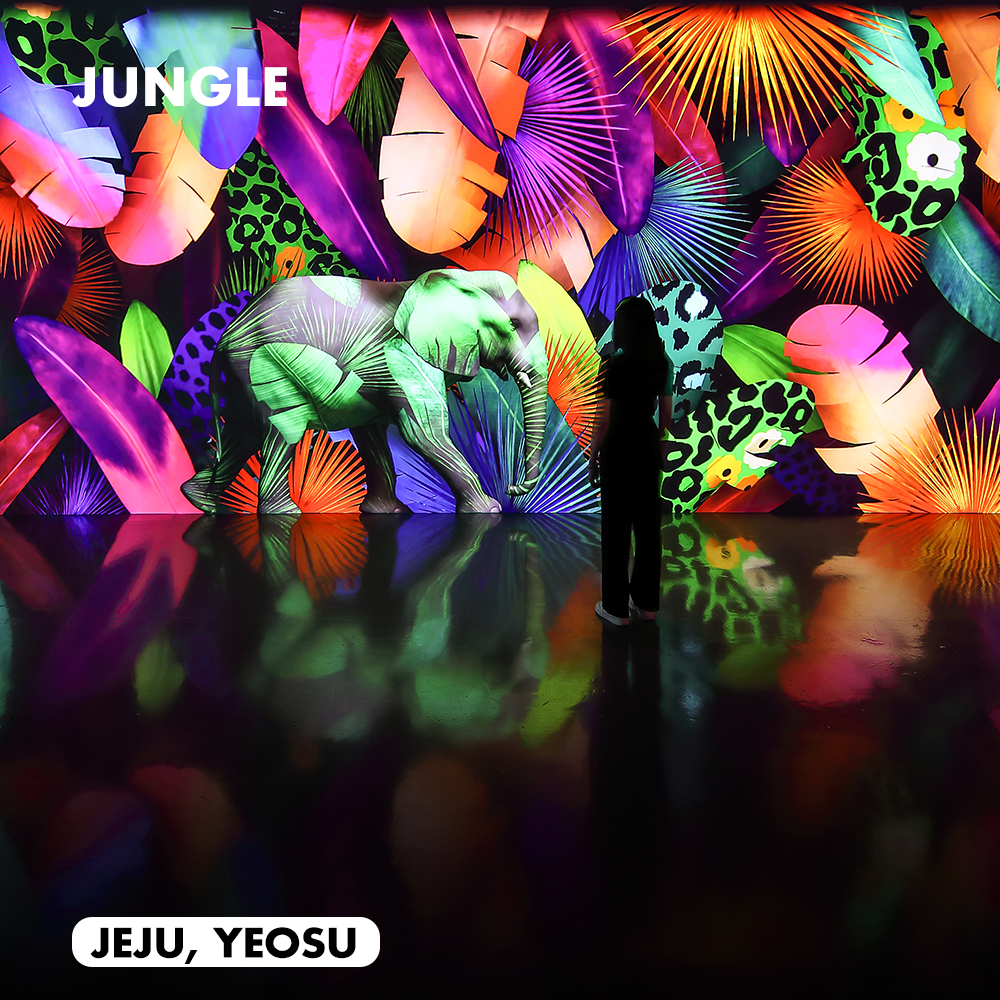
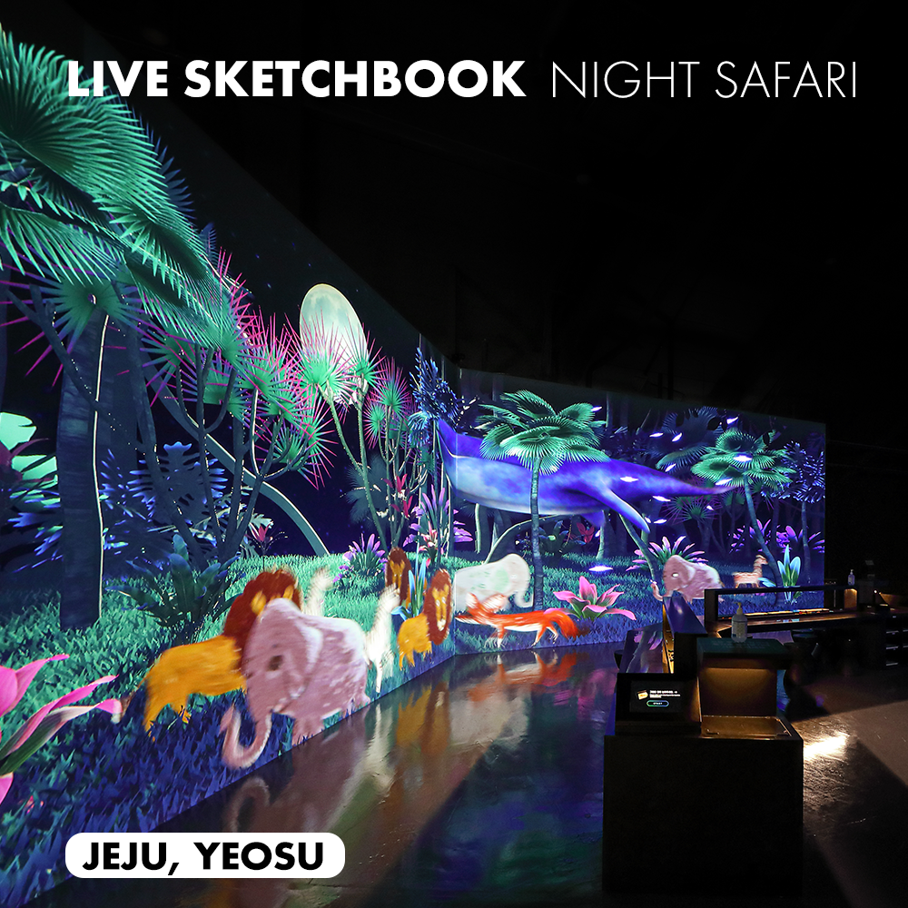

영원한 자연(ETERNAL NATURE)을 주제로 제작된 작품 들은 시각적 강렬함과 더불어 감각적인 사운드 및 품격 있는 향기와 함께 완벽한 몰입 경험을 제공합니다.
모든 감각의 긴장을 잠시 내려놓고 아르떼뮤지엄 제주가 선사하는 영원한 자연의 공간 속으로 입장해 보세요.
CURRENT EXHIBITION
01
02
03
04
05
06
07
08
09
10
11
12

-

WATERFALL - METAL
강하면서도 유연한 신비로운 메탈 폭포. 차갑고 단단한 고체가 유기적으로 움직이며 만들어내는 메탈폭포는 살아있는 생명체처럼 보이기도 한다. 신비로운 움직임과 색채가 현실에선 경험할 수 없는 초현실적 공간을 만들어낸다.
-

GARDEN - LIGHT OF JEJU ISLAND
제주를 담은 빛의 정원. 제주의 바람 소리를 들으며 햇살 가득한 숲길을 걷고 현대 건축물 속에서 보이는 제주의 풍경을 감상하며 새롭게 해석된 상상 속 제주의 모습을 만난다.
-

GARDEN - LIGHT OF MASTERPIECES
명화를 담은 빛의 정원. 르네상스부터 상징주의까지 서양미술사를 대표하는 거장들의 작품 속에서 예술적 사색의 순간을 경험한다.
-

FLOWER - RAPESEED
기다림 후에 만나는 빛나는 생명력. 차디찬 겨울이 지난 후 만나는 봄은 더욱 더 강하고 아름다운 생명체를 만든다. 신비로운 빛을 만난 꽃은 꽃잎이 되어 하늘로 오르고 꽃이 떠난 가지에는 새로운 꽃이 핀다. 유채의 지속적인 순환은 피고지기를 반복하며 반짝이는 금빛 꽃밭을 만들어낸다.
-

쏟아질 듯 갇혀 있는 초대형 파도
나를 향해 쏟아질 듯 다가오는 초대형 파도를 마주하다. 아나몰픽 기법으로 확장된 생경한 공간 속에서 집어삼킬 듯 다가오되 갇혀 있는 역설적인 파도의 울림을 경험한다.
-

BEACH - AURORA
찬란한 빛을 머금은 오로라와 거센 파도의 대비. 화려하지만 유유히 흐르는 오로라와 단순하지만 속도감 있는 파도의 조합이 주는 오묘한 사유의 공간에 들어가다.
-

STAR - MILKYWAY
은하수를 따라 떠나는 여행. 별빛의 흐름에 따라 시작된 여정은 공간을 가득 채운 아름다운 별빛 우주를 지나, 그 끝에서 놀라운 우주의 신비를 마주하게 된다.
-

달빛을 머금은 달토끼와의 만남
거울로 무한히 확장된 달빛 속에서 숨은 달토끼를 찾아 나선다. 달빛을 머금은 공 속에 숨은 달 토끼와의 만남. 달 속에 앉아 있는 4M 크기의 초대형 토끼가 함께 놀아줄 친구를 기다린다
-

트로피컬 열대 우림 속 변신의 정글
열대 우림의 정글 속에서 새롭게 생겨나는 페르소나. 트로피컬 색채로 길게 뻗은 미디어로 구현된 벽면을 따라 주변 환경과 빛에 의해 색과 패턴이 변하는 정글 속 동물들을 조우한다.
-

공간을 초월한 새로운 차원으로의 여행
칠흑 같은 어둠 속에서 펼쳐지는 새로운 차원으로의 이동. 아나몰픽 영상과 입체 사운드를 통해 현실의 공간을 벗어나 환영 속 우주를 만난다.
-

생명을 불어넣은 밤의 사파리.
고요한 밤이 내려앉은 사파리, 밤의 연주가 들려오고 동물들이 살아 움직인다. 와이드한 스크린에 펼쳐진 거대한 밤의 사파리에 내 손으로 생명을 불어넣은 동물들이 컬러풀하게 채워진다.
-

TEABAR - CAMELLIA
미디어아트로 즐기는 달콤한 테이블. 제주의 숨결을 담은 차(TEA)베이스의 달콤한 MOCKTAIL을 즐길 수 있는 'TEA BAR'. 아름다운 선율과 미디어아트로 표현되는 라이브 가니쉬를 감상하고, 제주의 달콤한 맛과 향기를 오감으로 즐긴다.
주최/주관/제작

투자/협찬